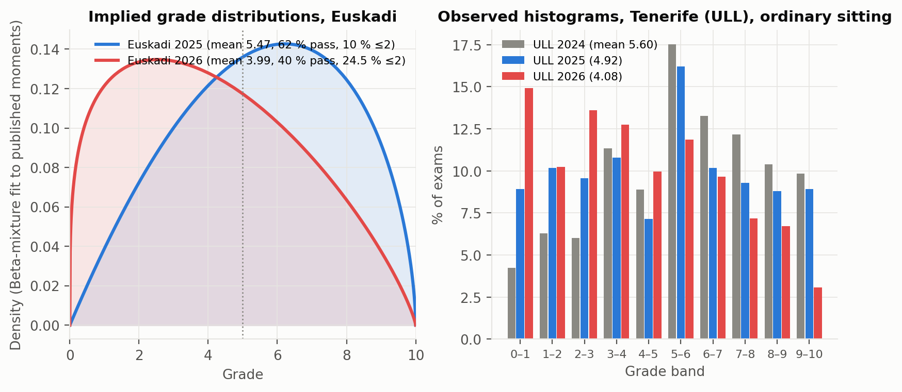
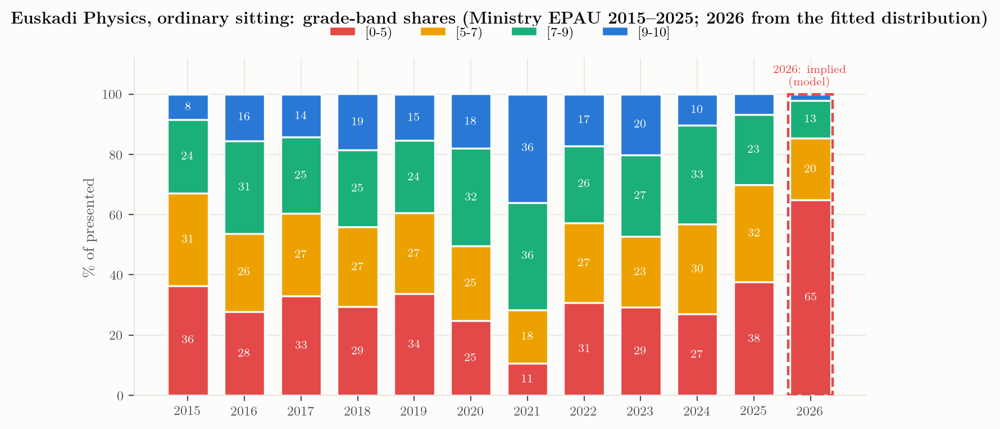

The shape of the collapse
What the published moments imply about the 2026 grade distribution, checked against the Canarias histograms
What EHU published, and what it implies
For Física 2026 the university published four summary statistics (Euskal Herriko Unibertsitatea, 2026): the mean \(\bar{x} = 3.99\) over \(N = 2\,066\) examinees, the pass share \(P(x \ge 5) = 0.398\), the low-score share \(P(x \le 2) = 0.245\) (2025: 0.10) and the zero share \(P(x = 0) = 0.032\). No histogram, no standard deviation, no pass count. With \(N = 2\,066\) the rounded percentages pin the counts to narrow intervals: 822–823 passes, 506–507 exams at two points or less, 66–67 zeros. These are arithmetic consequences, not observations, and are used only as such.
A mean, a pass rate and a tail share are three constraints. A two-parameter family on \([0,10]\) with a point mass at zero,
\[ f(x) = p_0\,\delta(x) + (1-p_0)\,\frac{1}{10}\,\mathrm{Beta}\!\left(\tfrac{x}{10};\,a,b\right), \qquad p_0 = 0.032 , \]
can be fitted to them by least squares in \((\log a, \log b)\). The Beta family is not a theory of how marks arise; it is the simplest smooth density on a bounded interval that can be unimodal, flat or J-shaped, which is what is needed to see whether “3.99 / 39.8 % / 24.5 %” describes a shifted bell or a different shape altogether. The same fit is made for 2025 (mean 5.47, pass 62.3 %, 10 % at ≤ 2; the zero share was not published and 1.2 % is assumed, with a sensitivity check in results.json).
results.json → beta_fits).
| Fit | a | b | SD (model) | Median | % ≥ 7 | % ≥ 9 | % < 5 |
|---|---|---|---|---|---|---|---|
| Euskadi 2025 (5.47 / 62.3 % / 10 % ≤2) | 2.00 | 1.61 | 2.39 | 5.61 | 30.3 | 5.9 | 41.5 |
| Euskadi 2026 (3.99 / 39.8 % / 24.5 % ≤2) | 1.27 | 1.81 | 2.52 | 3.80 | 14.6 | 2.1 | 64.9 |

The 2025 fit is a mild bell with mode near 6 (\(a = 2.0,\ b = 1.6\)). The 2026 fit has \(a = 1.27 < b = 1.81\): a density that is highest near the origin and decreases monotonically, with an implied median of 3.8, an implied share of marks above 7 that falls from 30 % to 15 %, and a share above 9 that falls from 6 % to 2 %.
Three moments cannot, however, distinguish a J-shaped density from a bell that has been pushed down against the floor: shifting the 2025 fit by \(-1.48\) and letting the mass below zero pile up in the lowest band reproduces \(P(x \le 2) \approx 0.23\) and \(P(x \ge 5) \approx 0.38\), close to the published 0.245 and 0.398. What the moments do establish is the opposite of a subgroup effect. If 2026 had been a normal year for most candidates and a disaster for a minority — say, the scripts of a few of the 41 tribunals — the low tail would be a lump added to an otherwise 2025-like distribution, and a quarter of all candidates could not end up at two points or less while the pass rate stayed near 40 %. The 2026 numbers describe a cohort-wide displacement of roughly one and a half points with the lower part of the cohort compressed into the 0–2 band. Whatever the cause, it acted on almost everyone.
The Ministry grade bands, 2015–2025
The Ministry cube gives, for every community and year, the distribution of Physics marks in six bands. For Euskadi (specific phase, ordinary sitting):
data/analysis/euskadi_grade_bands_2015_2025.csv).
| Year | [0-5) | [5-6) | [6-7) | [7-8) | [8-9) | [9-10] |
|---|---|---|---|---|---|---|
| 2015 | 36.4 | 16.3 | 14.4 | 13.2 | 11.1 | 8.5 |
| 2016 | 27.7 | 14.5 | 11.5 | 14.2 | 16.4 | 15.6 |
| 2017 | 33.0 | 14.2 | 13.2 | 13.0 | 12.3 | 14.3 |
| 2018 | 29.3 | 12.8 | 13.8 | 13.0 | 12.4 | 18.6 |
| 2019 | 33.8 | 13.8 | 13.0 | 11.8 | 12.3 | 15.4 |
| 2020 | 24.9 | 11.6 | 13.1 | 15.7 | 16.7 | 18.0 |
| 2021 | 10.6 | 7.8 | 9.9 | 15.2 | 20.5 | 36.0 |
| 2022 | 30.6 | 13.2 | 13.4 | 13.2 | 12.5 | 17.2 |
| 2023 | 29.3 | 12.3 | 11.1 | 12.6 | 14.5 | 20.2 |
| 2024 | 27.0 | 16.0 | 13.8 | 17.6 | 15.3 | 10.3 |
| 2025 | 37.7 | 18.0 | 14.1 | 12.7 | 10.7 | 6.7 |

Two things stand out. The failing band \([0,5)\) had been 25–34 % in every normal year and 37.7 % in 2025; the 2026 fit puts it near 65 %. And the top band \([9,10]\) had already collapsed in 2025 (6.7 %, from 10.3 % in 2024 and 17–20 % in 2018–2023) before the mean did: the first year of the competency model removed the top of the Basque distribution, the second removed the middle.
The Canarias mirror: observed histograms
Euskadi publishes moments; the two Canarian universities publish full histograms, zero counts, ten counts and means by sex on their Power BI dashboards (Universidad de La Laguna, Gabinete de Análisis y Planificación, 2026; Universidad de Las Palmas de Gran Canaria, Dirección de Acceso, 2026). Their 2026 results are the closest observed analogue of the Basque case.
data/found_canarias_ull_powerbi.csv, data/found_canarias_ulpgc_powerbi.csv.
| University, year (June) | Exams | Mean | % < 2 | % < 5 | % in [5,6) | % ≥ 9 |
|---|---|---|---|---|---|---|
| ULL 2024 | 731 | 5.60 | 10.5 | 36.8 | 17.5 | 9.8 |
| ULL 2025 | 796 | 4.92 | 19.1 | 46.6 | 16.2 | 8.9 |
| ULL 2026 | 683 | 4.08 | 25.2 | 61.5 | 11.9 | 3.1 |
| ULPGC 2024 | 796 | 6.15 | 6.5 | 32.0 | 12.6 | 16.1 |
| ULPGC 2025 | 758 | 5.25 | 14.0 | 45.4 | 13.3 | 12.5 |
| ULPGC 2026 | 712 | 4.41 | 22.6 | 57.2 | 12.8 | 4.9 |
| Band | ULL 2026 | ULL 2025 | ULL 2024 | ULPGC 2026 | ULPGC 2025 | ULPGC 2024 |
|---|---|---|---|---|---|---|
| [0-1) | 14.9 | 8.9 | 4.2 | 11.2 | 6.6 | 2.9 |
| [1-2) | 10.2 | 10.2 | 6.3 | 11.4 | 7.4 | 3.6 |
| [2-3) | 13.6 | 9.6 | 6.0 | 10.0 | 10.7 | 6.7 |
| [3-4) | 12.7 | 10.8 | 11.3 | 13.1 | 11.3 | 9.3 |
| [4-5) | 10.0 | 7.2 | 8.9 | 11.5 | 9.4 | 9.6 |
| [5-6) | 11.9 | 16.2 | 17.5 | 12.8 | 13.3 | 12.6 |
| [6-7) | 9.7 | 10.2 | 13.3 | 9.8 | 10.8 | 11.4 |
| [7-8) | 7.2 | 9.3 | 12.2 | 9.4 | 11.1 | 13.6 |
| [8-9) | 6.7 | 8.8 | 10.4 | 5.9 | 6.9 | 14.3 |
| [9-10) | 3.1 | 8.9 | 9.8 | 4.9 | 12.5 | 16.1 |
The 2026 Tenerife histogram — 683 exams, 15 % in \([0,1)\), 25 % below 2, 61 % below 5, 3 % at or above 9, mean 4.08 — is, band for band, what the Basque fit predicts for 2026 (13 % in \([0,1)\), 26 % below 2, 65 % below 5, 2 % above 9). Las Palmas 2026 (22.6 % below 2, 57 % below 5, mean 4.41) is the same shape one step less severe. Both islands had a bell-shaped 2024 (ULL mode at \([5,6)\), ULPGC mode at \([9,10]\)), a flattened 2025, and a J-shaped 2026.
Two details of the Canarian histograms are worth carrying back to Euskadi:
- The pass-line pile-up disappeared. In 2024 and 2025 the \([5,6)\) band is the modal band at ULL (17.5 %, 16.2 %) — the familiar signature of markers rounding borderline scripts up to 5. In 2026 it is 11.9 %, no larger than its neighbours. Whatever happened in 2026, it did not include a benevolent hand at the threshold.
- Zeros multiplied. ULL: 5 → 18 → 30 zeros (0.7 % → 2.3 % → 4.4 % of exams). Euskadi 2026: 3.2 %. Zeros in a four-problem paper are not students who tried and failed; they are blank or near-blank scripts, i.e. a decision by the candidate. Their growth is a participation signal (students sitting Física because they enrolled for it, then giving up) as much as a difficulty signal.
Variance, not only level
Where standard deviations are published — Valencia gives them per university — the 2026 Física SD is 2.38 on a mean of 6.40, essentially unchanged from 2.28 on 5.89 in 2025. The Basque fit implies an SD of 2.5 in 2026 against 2.4 in 2025: the coefficient of variation rises from 0.44 to 0.63 simply because the mean fell while the spread did not. In the language of the Ikastorratza comparison (Ruiz de Gauna & Sarasua, 2013), the Basque exam did not become a finer discriminator in 2026; it compressed everyone toward the floor while keeping the same absolute dispersion.
What the shape rules out, and what it does not
A distribution with a quarter of the candidates at two points or less and a vanishing top decile, in a cohort whose school marks average 7.1 (Chapter 5), is not the product of one severe tribunal or one badly prepared school network: those would show up as a lump, not as a shift of the whole mass. It is consistent with a cohort-wide cause — a paper that a large fraction of candidates could not start, marking criteria applied strictly to all, or both — and with the disappearance of any compensating leniency at the pass threshold that the Canarian histograms make visible. The Canarian coordinators wrote exactly this diagnosis for their milder 2025 (Gobierno de Canarias, Subcomisión de Física, 2025). The Basque tribunal-level data that EHU says it holds (Chapter 6) would separate the paper from the marking; the published moments cannot.